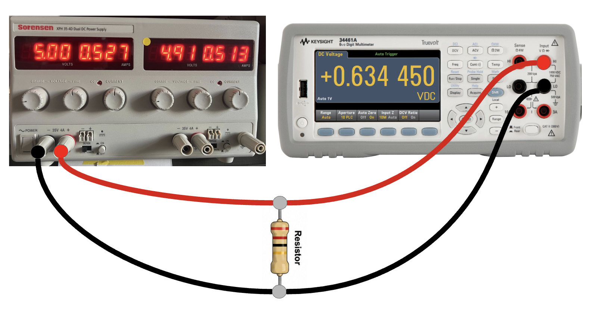
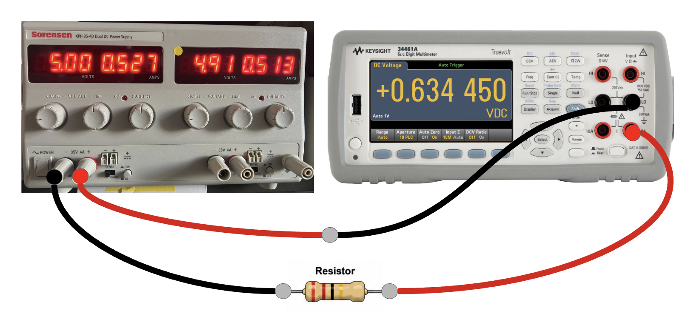

E1 — Lab Assignment
Lab 1: P=IV Power & Uncertainty
Multimeter-based electrical power measurement (P=IV) with full uncertainty propagation. The anchor activity for CLO 2 in E1.
ASEN 3501 — Lab 1: Power, Voltage, and the Language of Uncertainty
Student-Facing Assignment
Segment: E1 — Execution & Quantification Week: 2 CLO Alignment: CLO 1, CLO 2, CLO 5 Assessment: Brief lab report (support document) + 3-minute oral interview Estimated time: 3–5 hours total (in-lab activity: ~1 hour; report preparation: 2–4 hours)
Why This Lab Exists
Every engineering measurement you take comes with a number and an uncertainty. The number alone is incomplete. It tells you what the instrument displayed, not what the physical quantity actually is or how confident you should be in that display.
This lab is your first chance to practice treating uncertainty as a required output, not an afterthought. The physical setup is deliberately simple: a resistor, a power supply, and a multimeter. The simplicity is intentional. There is nothing here to distract you from the core question: given that your instruments have limits, what can you actually claim about the power dissipated in this circuit?
That question, and the rigorous way to answer it, is the foundation this course is built on.
Learning Goals
By the end of this lab and its associated activities, you should be able to:
- Measure voltage and current using a digital multimeter, correctly read and record the result, and assign an appropriate uncertainty from the instrument datasheet.
- Apply first-order uncertainty propagation (the general method using partial derivatives) to compute the uncertainty in a derived quantity, electrical power, from measurements of voltage and current.
- Explain why different algebraic forms of the same physical law (P = IV, P = V²/R, P = I²R) produce different uncertainty estimates for the same quantity, and articulate which form is most sensitive to which measured input.
- Run a Monte Carlo simulation in MATLAB to estimate uncertainty using the same manufacturer specifications, and compare the Monte Carlo result to the partial-derivative result.
- State a result in the course reporting form: estimate ± interval (units; interval type, method, and coverage basis).
Course reporting convention
Use E1_W2_R3_reading.md for every uncertainty statement. Convert all elemental inputs to standard uncertainties before propagation. Report Taylor-series results as combined standard uncertainty u_c, and, when requested, as expanded uncertainty U = k u_c with k stated. Report Monte Carlo percentile bounds as coverage intervals, not confidence intervals. Label every plotted interval with its basis.
Type A and Type B describe how an uncertainty is evaluated, not whether an effect is random or systematic. A Type A evaluation uses data from repeated observations. A Type B evaluation uses other information, such as a datasheet, calibration certificate, manual, prior measurements, or engineering judgment. After converting each input to a standard- uncertainty basis, combine them as u_c. A stated coverage factor k is the multiplier used to form expanded uncertainty, U = k u_c; k = 2 is not automatically a 95% frequentist confidence interval unless the coverage basis supports that interpretation.
- Explain the core concepts of this lab clearly and concisely to someone who has not taken this course.
Background: The Circuit
You will build a simple series circuit: a DC power supply, a known resistor, and a multimeter. You will measure:
- V — voltage across the resistor (voltmeter, in parallel)
- I — current through the resistor (ammeter, in series)
From these measurements you will compute electrical power three ways:
| Equation | Measured inputs | What you derive |
|---|---|---|
| P = IV | I and V directly | Power from both measurements |
| P = V²/R | V and R | Power using voltage and resistance |
| P = I²R | I and R | Power using current and resistance |
Each form uses a different set of measured inputs. These are different measurement models, even though the circuit law is algebraically equivalent under ideal conditions. The estimates can differ because V, I, and R are acquired differently, at different times, with shared inputs and different loading or thermal effects. Algebra alone does not create new information.
Which resistance value to use: two valid cases
For the two forms that use R (P = V²/R and P = I²R), there are two defensible ways to get a value for R and its uncertainty:
- Case 1: Nominal + manufacturer tolerance. Use the resistor's labeled nominal value
and the tolerance printed on it (e.g., 200 Ω ± 5%). Treat the printed tolerance as a symmetric half-width a_R; with a uniform Type B model, use u_R = a_R/√3.
- Case 2: DMM-measured + instrument accuracy. Measure the resistor's resistance
directly with the multimeter and use the DMM's resistance-measurement accuracy specification (from the datasheet) to calculate its symmetric half-width a_R, then convert it to u_R = a_R/√3 under the same uniform Type B model.
You are required to compute both cases for P = V²/R and P = I²R, not just pick one. This is intentional, and it's the real point of this part of the lab: Case 1 and Case 2 use different information about R and will generally produce different point estimates and different uncertainty bounds. Compare their point estimates and labeled intervals, but do not interpret overlap as locating the true value. These estimates are not independent: they share measurements and may share instrument effects. Agreement is an internal-consistency check; disagreement is a prompt to inspect assumptions, timing, loading, self-heating, and the uncertainty model.
A note on system warm-up and drift
The power supply and multimeter in this circuit are not perfectly static the moment you turn them on. It's common to observe the voltage reading drift gradually over the first several minutes of operation. For example, it might start a little high right after power-on and settle to a slightly lower, stable value after about five minutes. This is typically caused by the power supply warming up to its normal operating temperature, not by an error in your circuit or technique. If you power-cycle the supply (turn it off and back on) with the circuit still connected, the reading will usually jump back up and begin drifting again. That's a useful check if you want to confirm the supply, rather than the resistor or DMM, is the source of the drift.
Practical implication for data collection: take your five repeated V and I readings close together in time (within a minute or two of each other), rather than spacing them out over the full lab session. This keeps your repeatability trials measuring genuine instrument/reading variation, rather than accidentally capturing warm-up drift and mistaking it for repeatability.
If you are using Case 2 (DMM-measured resistance), there is an additional interaction to be aware of: if you measure R with the DMM before the resistor is in the powered circuit, that measurement reflects the resistor at room temperature ("cold"). Once current flows through the resistor for an extended period, it will self-heat slightly, and its actual in-circuit ("hot") resistance may differ from your cold measurement. You don't need to correct for this quantitatively, but flag it as a limitation if your Case 1 and Case 2 results in Section 6 don't overlap as cleanly as you'd expect.
The Instrument — Reading Your Multimeter
What the display is telling you
A digital multimeter display shows a numerical reading that is updated at a fixed rate. On most benchtop multimeters, the least significant digit, the rightmost digit, will fluctuate during a measurement. This isn't noise in the measurement. It's the instrument's resolution limit combined with real variation in the signal.
Recording rule: Cover the fluctuating digit with your finger. Read and record the stable digits. Assign an uncertainty of ±½ of the last stable digit's place value.
Example: Your voltmeter reads 4.9<em>3</em>, 4.9<em>2</em>, 4.9<em>4</em>. The units digit in the tenths place is stable (4.9), but the hundredths digit fluctuates (2, 3, 4). You record 4.9 V and assign an uncertainty of ±0.05 V (half of one unit in the tenths place).
This is a conservative but not overcautious recording strategy. You aren't ignoring variation. You're bounding it at the resolution of the instrument. The tradeoff matters: if you assign unnecessarily large uncertainties, the systems designed around your measurements will be over-engineered and expensive. If you assign uncertainties that are too small, those systems might fail. The correct answer is the smallest defensible bound.
Two methods, two different jobs
You now have two different ways to assign an uncertainty to a measurement: the fluctuating-digit procedure above, and the manufacturer datasheet specification below. They aren't competing methods where you pick your favorite. They answer different questions:
- The fluctuating-digit method is a field technique. It's what you do at the bench,
in real time, with no datasheet in hand, just by watching the display. It's a fast, physical sanity check on resolution, and it's what you record and describe in Section 2 of your report to demonstrate you can read an instrument correctly.
- The datasheet specification is evidence for a specification-based Type B evaluation. It's what you use for every partial-derivative and Monte Carlo calculation in this lab. The reason it takes priority over the fluctuating digit is that a display can look perfectly stable and still be systematically wrong by more than the resolution suggests. The datasheet's accuracy spec captures that systematic error, which the fluctuating digit alone cannot.
If you ever find that your fluctuating-digit uncertainty is larger than the datasheet spec, that's worth a sentence of discussion in your report. It usually means the signal itself is genuinely noisy (e.g., an unstable supply or a marginal connection), not that the instrument's formal accuracy is worse than advertised.
Using the datasheet
The instrument datasheet specifies accuracy in the form:
± (% of reading + % of range)
For example: ± (0.5% of reading + 0.1% of range). This is a manufacturer limit, not automatically a standard uncertainty. Unless current calibration is verified, label this exercise specification-based. Treat the symmetric limit ±a as a Type B input with a uniform model, so the standard uncertainty is u=a/√3, unless the datasheet states another coverage basis. State that assumption before propagation.
Careful: these are percentages, not fractions. 0.5% means 0.005, not 0.5. A common mistake is to use 0.5 directly in the calculation, which inflates the uncertainty by a factor of 100. Double-check your decimal conversion before propagating.
Use the bundled Keysight 34460A/34461A/34465A/34470A datasheet. Before you begin any measurements, locate the 34461A specification for:
- DC voltage accuracy in the range you are using
- DC current accuracy in the range you are using
Write these down. They are your primary uncertainty inputs.
Datasheets typically list several tolerance columns depending on how long it has been since the instrument's last calibration (e.g., 90-day, 1-year, 2-year). Use the 2-year column unless your instructor tells you otherwise. The DMMs in this lab were purchased in 2019, and their listed accuracy specification assumes the stated calibration conditions. If current calibration cannot be verified, the exercise remains a specification-based estimate rather than a calibration-supported result. Do not invent a drift correction; state this limitation in Section 6.
The datasheet also lists an additional accuracy derating as a function of deviation from a reference room temperature. For this lab, assume the lab room is at the datasheet's reference temperature and do not compute a temperature correction term. This is an intentional scope decision, not an oversight: part of engineering judgment is recognizing which sources of uncertainty are negligible for a given situation and which are not. You are still expected to state this assumption explicitly in your report (Section 1 or 3) as your justification for excluding the temperature term. A documented assumption, even a simple one, is part of a complete uncertainty analysis.
Measurement-system limitations to identify
At a conceptual level, note four effects: voltmeter and ammeter loading can alter the circuit; using one DMM sequentially makes V, I, and R non-simultaneous while the supply and resistor drift; resistor self-heating changes the hot resistance from the cold ohmmeter measurement; and quantities derived from shared V, I, or R inputs are correlated. You do not need to estimate covariance numerically in Lab 1, but you must not call the three power estimates independent.
In-Lab Procedure
The procedure has three parts: building and measuring (steps 1–5), uncertainty analysis from the datasheet (steps 6–8), and Monte Carlo simulation in MATLAB (steps 9–10).
Note: a single multimeter can't measure voltage and current at the same time. It must be configured and connected differently for each. You'll measure V and I as two separate steps, not simultaneously.
Lab configuration
| Nominal resistance | Tolerance | Power rating | Supply target | Expected current | Expected power | Power-rating factor of safety |
|---|---|---|---|---|---|---|
| 200 Ω | ±5% | 0.25 W | 5.00 V | 25 mA | 0.125 W | 2× |
Keep the power supply off while building or changing the circuit. Before applying power, verify the resistor rating, DMM lead jacks, measurement mode, and wiring. The expected values are pre-lab checks, not substitutes for your measured values.
- Build the circuit: connect the resistor to the power supply so current can flow through it. Record the nominal resistor value and tolerance from its label. Also measure the resistor's resistance directly with the DMM (easiest done before wiring it into the powered circuit) and record this measured value. You'll need both the nominal and measured values for the resistance-uncertainty comparison described above.
- With the circuit verified and the supply still off, set the power supply target to 5.00 V as specified in the Lab configuration table, then apply power.
- Measure voltage first. Configure the multimeter as a voltmeter and connect it in parallel across the resistor. Read and record V from the display using the fluctuating-digit procedure above. Take five repeated V readings, close together in time (see the warm-up note above), to check for repeatability.

- Then measure current. Reconfigure the multimeter as an ammeter and reconnect it in series in the loop (this requires briefly breaking the circuit to insert the meter in the current path; it can't stay connected the way it was for the voltage measurement). Read and record I from the display using the same fluctuating-digit procedure. Take five repeated I readings, close together in time.

- Compute P three ways from your recorded V and I values. Note the differences.
- Using the manufacturer specifications from the datasheet, calculate the symmetric limits
a_Vanda_I, then convert them to the Type B standard uncertaintiesu_V = a_V/√3andu_I = a_I/√3under the uniform model. - Apply first-order uncertainty propagation (partial derivatives) to compute the combined standard uncertainty
u_Pfor each of the three forms. Show your work: write out the partial derivatives, substitute standard uncertainties, and state the result as P ± u_P. - Answer: which form of the power equation is most sensitive to uncertainty in V? In I? Where would you spend money on a better instrument if minimizing uncertainty in P was the goal?
- Using the same manufacturer limits, run a Monte Carlo simulation in MATLAB for each of the three power measurement models. For each manufacturer input, sample uniformly over its original bounds, such as
[V-a_V, V+a_V]and[I-a_I, I+a_I]. Use the corresponding original tolerance bounds for each resistance case. Do not useu_V,u_I, oru_Ras the uniform half-widths; those symbols are standard uncertainties after division by√3. Use at least 10,000 samples. Plot the resulting distribution of P for each model with appropriate labels and captions. If a manufacturer or calibration source explicitly supplies a Gaussian standard deviation or coverage basis, you may use that documented model instead and must cite it; do not invent a Gaussianσfrom an unlabeled tolerance. - Compare like quantities across methods: compare the Monte Carlo output standard deviation with the Taylor-series combined standard uncertainty
u_P, and report any Monte Carlo percentile bounds as clearly labeled coverage intervals. State whether the results are consistent and explain meaningful differences.
Deliverable: Brief Lab Report
You'll prepare a brief lab report to bring to your oral interview. This document is your support material for the interview. You may refer to it during the conversation, but the interview questions will probe your understanding, not your ability to read your own document.
The report isn't graded independently. It's evidence that you prepared.
Required sections
1. Circuit description and measurement record One paragraph and a simple schematic or sketch. What did you build? What did you measure? Include your recorded V and I values with units. Include the datasheet specification you used.
2. Fluctuating digit — what you did and why Describe the fluctuating digit procedure in your own words. What did the display show? What did you record? What uncertainty did you assign from the display, and why?
3. Uncertainty propagation — partial derivatives Show the three partial derivative derivations for u_P under each power equation form. For the two forms that depend on R (P = V²/R and P = I²R), compute u_P twice each: once using Case 1 (nominal R and its tolerance) and once using Case 2 (DMM-measured R and its measurement uncertainty). Present the final result for each as P ± u_P with units. A table is the clearest way to present this (one row per form/case combination).
4. Sensitivity analysis Which form is most sensitive to uncertainty in V? In I? Answer with numbers, not just words. Where would you invest in a better instrument, and why?
5. Monte Carlo simulation Include your MATLAB figure(s) showing the distributions of P for each equation form. Each figure must have a title, labeled axes with units, a legend, and a caption that states the key takeaway in one sentence. Include the key MATLAB code (the simulation loop and distribution plot — not every setup line). State the original manufacturer half-widths a, show the uniform bounds you sampled, and report the simulated output standard deviation and any selected percentile coverage interval.
6. Comparison: partial derivatives vs. Monte Carlo Are the results consistent? State the comparison numerically. Don't just say "yes they agree." What does the comparison tell you about when you might prefer one method over the other? Also briefly address: given that the DMMs were purchased in 2019, is it reasonable to trust the datasheet's 2-year-column specification at face value, or should you flag possible drift beyond spec as an additional (unquantified) source of uncertainty? Finally, compare your Case 1 and Case 2 results for P = V²/R and P = I²R: do the two P ± u_P ranges overlap? Treat overlap only as an internal-consistency clue under your stated assumptions; it does not locate the true value. State what you observed and identify shared inputs or effects that prevent the cases from being independent.
7. Result statement State your best estimate of P in the correct engineering form: P = [value] ± [uncertainty] [units] ([interval type; method; coverage basis])
8. Plain-language explanation In 3–5 sentences, explain what you did in this lab and what your result means to someone who has never taken an engineering course. Assume your audience is a curious high school student. This section should be in your introduction or conclusion, not appended as an afterthought.
Format and submission
Submit your report as a single .zip archive containing your LaTeX source (.tex file(s) and any figure files) and the compiled PDF, uploaded to Canvas before your scheduled interview slot. Bring the compiled PDF (printed or on a device) to your interview; the LaTeX source lets the AI-assisted grading pipeline check your work against the required sections consistently.
See E0 Supplemental: Getting Started with Overleaf and LaTeX if you haven't used LaTeX before.
Submission: See Canvas for the due date.
Oral Interview
The oral interview is a 3-minute, one-on-one conversation with a member of the teaching team. You may bring your lab report. No other materials are permitted.
The interview is a pass/fail assessment. You must pass this interview to satisfy the Lab 1 requirement.
Note that Learning Goal 6, explaining this lab's core concepts to someone without an engineering background, isn't just a report-writing exercise. It's one of the categories the interviewer may probe (see Category 5 in the student rubric), so it's worth practicing your plain-language explanation out loud, not just writing it in Section 8.
See the separate file LAB1_PIV_rubric_student.md for the question categories and what a passing response looks like. Prepare by reviewing that document before your interview.
Preparing with the course AI tutor
The course AI tutor persona is described in the E0 supplemental materials. You can upload this assignment document and the student rubric to a Claude or ChatGPT session configured with the tutor persona, and practice your oral responses before the interview. Example prompts:
- *"Ask me an oral interview question about why P = IV and P = V²/R give different
uncertainty estimates."*
- "Pretend you are the instructor and ask me to explain the fluctuating digit procedure."
- *"Give me a harder version of a question about when Monte Carlo is preferable to the
partial derivative method."*
The AI tutor cannot predict the exact questions you will be asked, but it can give you targeted practice on the core concepts. Use it.
Resources
- E1 Week 2 Lecture: Error Propagation, Sensitivity Analysis & Monte Carlo
- E1 Week 2 Lecture: Variability, Error, and Uncertainty
- Coleman & Steele, Experimentation, Validation, and Uncertainty Analysis for Engineers,
4th ed. — Chapter on uncertainty propagation (reference copy on course page)
- Keysight 34460A/34461A/34465A/34470A multimeter datasheet — use the 34461A accuracy tables and 2-year column
- MATLAB starter script — available on Canvas (sets up the Monte Carlo loop structure;
you complete the equation forms and plotting)
- E0 Supplemental: Virtual Multimeter Simulator (optional bonus activity)
- E0 Supplemental: AI Tutor Setup and Practice
- E0 Supplemental: Getting Started with Overleaf and LaTeX
- For multimeter technique when measuring voltage and current as separate steps in the
same circuit: https://www.youtube.com/watch?v=Y6xnLkiUMn8
ASEN 3501 — Lab 1 Assignment | E1 Week 2 Evergreen — physics content; Update-friendly — multimeter datasheet specifications, MATLAB starter script, power supply target voltage
Lab 1 (P=IV) — Frequently Asked Questions
ASEN 3501: Aerospace Experimental Methods
This document answers questions that come up frequently during Lab 1 preparation, execution, and report writing. If your question isn't here, ask your TA or the course AI tutor.
Before the lab
Should I use the nominal resistance value (from the label) or the measured resistance (from a pre-assembly DMM reading) when I compute power and propagate uncertainty?
Both. You're required to run the analysis both ways and compare, not pick one:
- Case 1: nominal resistance and its printed tolerance (e.g., 200 Ω ± 5%)
- Case 2: DMM-measured resistance and the DMM's resistance-measurement accuracy spec
These are two valid estimates of R and u_R, and they will generally give you slightly different P ± u_P results for P = V²/R and P = I²R. That's expected. The point of comparing them is to check internal consistency, not to locate the true value from their overlap. The cases share measurements and are not independent. If they disagree, inspect self-heating, meter loading, non-simultaneous readings, drift, and the Type B assumptions.
My five trial readings for V (or I) aren't just scattered. They seem to be trending steadily in one direction (e.g., drifting downward). Is something wrong?
Probably not. This is likely warm-up drift, not a mistake. The power supply and DMM take a few minutes to reach a stable operating point after power-on, and it's common to see voltage readings settle gradually (for example, starting a little high right after power-on and drifting down slightly over the first several minutes) before leveling off. This is a different phenomenon from the fluctuating-digit noise described in the assignment, and a different phenomenon from instrument accuracy error. It's a slow, directional trend rather than a random jitter around a stable value.
What to do about it:
- Take your five repeated readings close together in time (within a minute or two of each
other) rather than spread across the full lab session. This keeps your "repeatability" trials measuring genuine repeatability, not warm-up drift dressed up as repeatability.
- If you want to confirm the drift is coming from the power supply rather than the circuit
or DMM, you can power-cycle the supply (off, then back on) with the circuit still connected. If the reading jumps back up toward its initial value and begins drifting again, that points to the supply as the source.
- You don't need to model or correct for this drift mathematically. Just be aware of it,
take your readings in a tight time window, and if you notice a strong trend, it's worth a sentence in your report noting that you observed it and controlled for it by timing your trials closely together.
If you're using Case 2 (DMM-measured resistance) for your resistor value, there's a related wrinkle: if you measured R with the DMM before the resistor was in the powered circuit, that's a "cold" measurement. Once current flows for a while, the resistor will self-heat slightly and its true in-circuit resistance may drift from that cold value. You don't need to correct for this either, but it's a reasonable thing to mention if your Case 1 and Case 2 results don't overlap as cleanly as expected.
My propagated uncertainty came out way too large, like the same order of magnitude as P itself. What did I do wrong?
The most common cause is a percent-to-decimal error. The datasheet specification is given as a percentage (e.g., 0.5% of reading), which means 0.005, not 0.5. If you plug in 0.5 directly, your uncertainty will be inflated by a factor of 100. Go back to your u_V and u_I calculations and confirm you converted the percentage to a decimal before multiplying.
Do I need to memorize my report for the oral interview?
No. You may bring your lab report and refer to it freely. What the interviewer is assessing is whether you can explain the reasoning behind a result, not whether you can recall a formula from memory. If asked to walk through the partial derivative computation, it's completely fine to look at the formula in your report. The question is whether you can explain what each term means and why the form matters.
The rubric requires you to demonstrate understanding in 3 of 5 categories. See LAB1_PIV_rubric_student.md for what "understanding" looks like in each category.
During the lab
Should I average the five voltage and current readings, or use each trial separately?
Use the mean of your five readings as your measured value of V and I. Compute the sample standard deviation s and the standard error s/√5. The standard error is a Type A standard-uncertainty contribution for the mean only when the observations are reasonably independent and the system is stable over the measurement window. Inspect the sequence first: a directional trend indicates drift, so do not hide it by treating the five values as stationary repeatability data. Compare the Type A contribution with the converted Type B component from the manufacturer specification; do not assume in advance which one dominates, and do not double count the same effect. Record all five individual readings in your report and use the mean values for the power calculations.
Monte Carlo simulation
Which distribution should I use for V and I in the Monte Carlo simulation?
For this lab, use a uniform distribution over the original manufacturer bounds. If the datasheet calculation gives a symmetric limit ±a, sample from [measured value-a, measured value+a]. The corresponding Type B standard uncertainty is u_B=a/√3.
Do not sample from [measured value-u_B, measured value+u_B]; u_B is a standard uncertainty, not the original hard limit. A Gaussian model is appropriate only if a manufacturer, calibration certificate, or explicit instructor-approved assumption gives you a defensible σ or coverage basis. Do not create σ=u/2 from an unlabeled tolerance.
State the original half-width, sampled bounds, and model in Section 5.
How do I compare my Monte Carlo result with my partial-derivative result?
Compare like quantities. For the uniform input model, convert every manufacturer half-width with u_B=a/√3 before Taylor-series propagation. Then compare the Monte Carlo output standard deviation with the Taylor-series combined standard uncertainty u_P. If you also report Monte Carlo percentile bounds, call them coverage intervals and state the percentiles; do not compare an unlabeled percentile width directly with u_P.
Report writing
I computed three different values of P: 0.2425 W, 0.2447 W, and 0.2404 W. They're close but not the same. Which one is my "best estimate" for Section 7?
Report the result from the form with the smallest propagated uncertainty. In this lab that is typically P = IV, because both V and I are directly measured inputs and the sensitivity coefficients are smaller than in the forms that involve R² terms.
Your choice should be consistent with your Section 4 sensitivity analysis. If you concluded in Section 4 that P = IV has the smallest uncertainty, your Section 7 result should use that form. The point of the sensitivity analysis isn't just arithmetic. It's to make a reasoned choice about which result to report.
You may report all three forms for completeness, but designate one as your primary result and explain why.
What is the difference between Type A and Type B uncertainty evaluation, and what does the coverage factor k mean?
The labels describe where the uncertainty estimate comes from:
- Type A is data-driven. You evaluate it statistically from repeated observations,
such as the sample standard deviation or the standard error of a mean.
- Type B is information-driven. You evaluate it from a datasheet, calibration
certificate, manual, prior information, or an engineering judgment.
Type A does not automatically mean random, and Type B does not automatically mean systematic. Convert both kinds of input to standard uncertainties before combining them as u_c. If expanded uncertainty is requested, multiply by the stated coverage factor: U = k u_c. The factor k is a multiplier, not a confidence level by itself; do not call k = 2 a 95% confidence interval unless the stated coverage basis justifies that interpretation.
Should I say "95% CI" or "manufacturer spec bound" when stating my result in engineering form in Section 7?
For Lab 1, use "specification-based Type B standard uncertainty" as your default after converting the manufacturer limit using your stated distribution assumption.
- "Manufacturer spec bound" means the uncertainty was derived directly from the
instrument datasheet specification, without a statistical sampling argument. This is accurate for what you did.
- "95% CI" means you can trace the bound to a specific probability statement, either
from repeated measurements and a t-distribution, or from a manufacturer spec that explicitly states it corresponds to 95% coverage.
If a datasheet or calibration certificate gives an expanded uncertainty and coverage factor, convert with u=U/k and preserve that stated basis. Do not relabel a manufacturer bound as a frequentist confidence interval.
The general format is: P = [value] ± [uncertainty] W (combined standard uncertainty; specification-based Type B inputs; Taylor-series method)
Lab 1 FAQ | ASEN 3501 | E1 Week 2 Generated from simulated student gap analysis — 2026-05-26 Questions or corrections: contact the teaching team
ASEN 3501 — Lab 1: Student-Facing Interview Rubric
Question Categories and Passing Standard
Assessment type: Oral interview (pass/fail) Duration: 3 minutes Materials allowed: Your lab report only
How this interview works
The interviewer will ask you 2–4 questions drawn from the categories below. Not every category will be covered in every interview. The interviewer will probe based on your responses and the time available.
A passing response demonstrates that you understand the why, not just the what. You don't need to recall exact numbers from your report. You need to be able to reason through the concepts in real time, with your report available for reference.
A failing response is one where you can't explain the reasoning behind a procedure, can't interpret a result in physical terms, or can't connect the calculation to the underlying concept. Reading numbers off your report without explanation doesn't constitute a passing response.
Question Categories
Category 1 — Measurement Recording and Instrument Resolution
What the interviewer wants to know: Can you explain how to read a real instrument and make a defensible uncertainty assignment from what the display shows?
You should be able to:
- Describe the fluctuating-digit observation and explain what causes it
- Explain the "cover the fluctuating digit" procedure and the logic behind it
- State the uncertainty you assigned from the display and justify it numerically
(e.g., "the tenths digit was stable, so I assigned ±0.05 V")
- Explain the difference between instrument resolution uncertainty (from the display) and
manufacturer accuracy specification (from the datasheet), and why you used the datasheet for the formal analysis
- Label the result specification-based unless current calibration is verified, and explain
the Type B distribution or coverage assumption used to obtain standard uncertainty
- Distinguish a data-driven Type A evaluation from an information-driven Type B evaluation;
explain that these labels describe the evaluation method, not whether an effect is random or systematic
- Explain the difference between combined standard uncertainty
u_cand expanded
uncertainty U = k u_c, including why k is not a confidence level by itself
Example questions:
- "Your display was showing 4.92, 4.93, 4.91 — what did you record, and why?"
- "Why didn't you just use the average of the fluctuating readings?"
- "What's the difference between what the display is telling you and what the datasheet
is telling you?"
- "Which uncertainty inputs in your analysis were evaluated by Type A and which by
Type B?"
- "What does the
kinU = k u_cdo, and what would you need to know before calling
the resulting interval a 95% confidence interval?"
Category 2 — Uncertainty Propagation (Partial Derivatives)
What the interviewer wants to know: Can you explain the mechanics and interpretation of first-order error propagation?
You should be able to:
- Explain the general method: uncertainty in a derived quantity depends on the partial
derivative of that quantity with respect to each input, multiplied by the uncertainty in that input
- Write or describe the partial derivative expression for at least one of the three power
forms without looking at your report
- Explain why P = IV and P = V²/R give different uncertainty estimates even though they
compute the same physical quantity: they are different measured-input models, not merely different algebra
- Interpret the result: what does u_P = 0.03 W actually mean?
Example questions:
- "Without looking at your report, walk me through how you compute the uncertainty in
P = IV."
- "Why does the equation form matter for the uncertainty estimate?"
- "If I told you u_V was twice as large, which power equation form would be most affected,
and why?"
Category 3 — Sensitivity Analysis
What the interviewer wants to know: Can you use the partial derivative results to make an engineering judgment about where to invest in instrument quality?
You should be able to:
- Identify which power equation form is most sensitive to uncertainty in V, and which
is most sensitive to uncertainty in I, with a numerical justification
- Connect sensitivity to the practical question: if your goal is to minimize uncertainty
in P, where would you spend money on a better instrument?
- Explain that "more sensitive" means a small change in input uncertainty produces a
larger change in output uncertainty, not that the form is "less accurate"
Example questions:
- "Where in this experiment would a better instrument make the biggest difference?
Show me how you know that from your results."
- "If your current ammeter is your limiting source of uncertainty, what does that tell
you about which form of the power equation you should prefer for this circuit?"
Category 4 — Monte Carlo Simulation
What the interviewer wants to know: Do you understand what the Monte Carlo simulation is doing and how to interpret its output?
You should be able to:
- Explain in plain language what Monte Carlo uncertainty analysis is: you sample many
possible values of V and I from distributions consistent with the instrument specs, compute P for each sample, and look at the resulting distribution
- Explain what distribution you chose for V and I (Gaussian or uniform) and justify
your choice relative to the datasheet specification
- Interpret the distribution plot: what does the width of the distribution tell you?
Where does it overlap or diverge from the partial-derivative result?
- Treat overlap only as an internal-consistency clue, not proof of where the true value lies
- Identify meter loading, sequential timing/drift, resistor self-heating, and shared-input
dependence as conceptual limitations; no covariance calculation is required
- Explain when Monte Carlo might be preferred over the partial derivative method (e.g.,
when the relationship is nonlinear or the input distributions are non-Gaussian)
Example questions:
- "Walk me through what your MATLAB simulation is actually doing — step by step."
- "You chose a Gaussian distribution for V — why? What assumption does that embed?"
- "Your Monte Carlo result and your partial derivative result are close but not identical.
What explains the difference?"
Category 5 — Engineering Form and Communication
What the interviewer wants to know: Can you state a result the way an engineer would, and explain it to someone outside the field?
You should be able to:
- State your power result in the form: P = [value] ± [uncertainty] [units]
- Explain what the ± uncertainty means, not just as a formula artifact, but as an
epistemic claim about what you know and don't know
- Give a plain-language explanation of what you did and what you found, at a level
accessible to a non-engineer
Example questions:
- "Tell me your result. What does the ± number actually mean?"
- "If you had to explain to a high school student why the uncertainty matters, what
would you say?"
- "Why is it insufficient to just report P = 0.45 W?"
Passing Standard
| Outcome | Description |
|---|---|
| Pass | Student can reason through questions in at least 3 of the 5 categories without reading answers off the report. Explanations address the why, not just the what. At least one answer demonstrates unprompted connection between concepts (e.g., linking sensitivity to instrument investment). |
| Conditional pass | Student demonstrates understanding in 2–3 categories but struggles in 1–2. Interviewer may issue a specific remediation task (e.g., "redo the sensitivity analysis and bring it to office hours") before recording a pass. |
| Fail — reattempt required | Student cannot explain the core reasoning in any category without reading directly from the report, or demonstrates a fundamental misconception (e.g., conflates uncertainty with measurement error, or cannot explain what the Monte Carlo distribution represents). Reattempt scheduled within one week. |
How to Prepare
- Read
LAB1_PIV_assignment.mdcarefully. The question categories above map directly
to the learning goals and required sections in the assignment.
- Practice explaining each concept out loud. Saying it is different from knowing it.
Time yourself: can you explain the partial derivative method in 60 seconds without notes?
- Use the course AI tutor. Load this rubric and the assignment into your AI tutor
session and ask it to interview you. Ask for harder follow-up questions. Practice until you can answer without hesitation.
- Don't memorize your report. The interview is designed to be taken with your report
in hand. What will be tested is your ability to reason, not recall.
ASEN 3501 — Lab 1 Student Rubric | E1 Week 2 Evergreen — concept categories are stable; Update-friendly — specific question wording may be updated by teaching team each semester